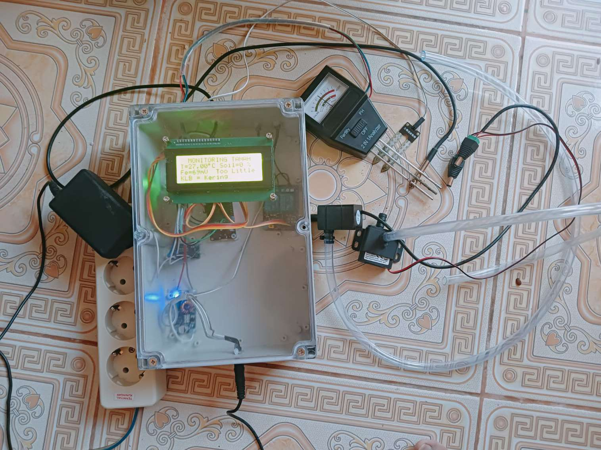
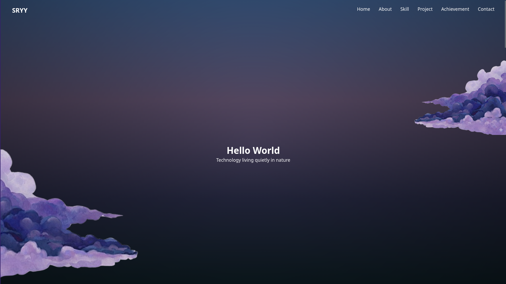
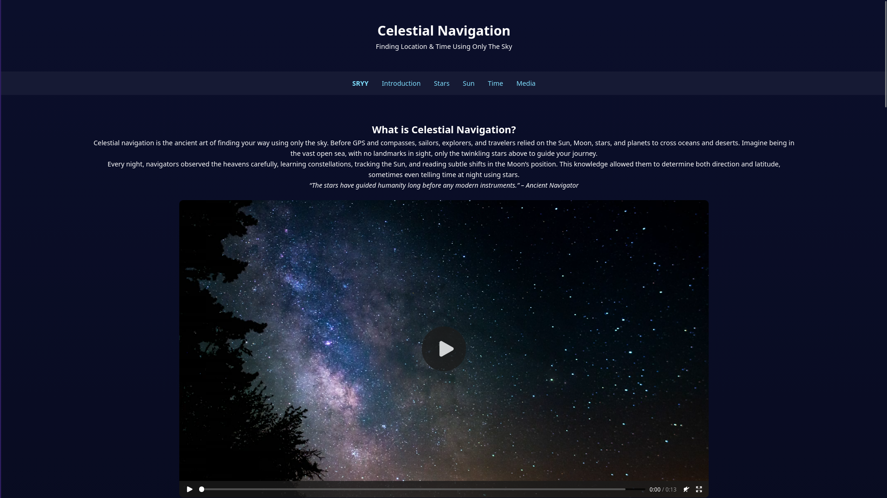

Exploring Code Beyond The Stars

ESP32 based monitoring system for plants with LCD and sensors.
Not Open Source Project , sorry.
personal-web v1.1 (minor update)

Celestial navigation is the ancient, independent practice of determining a vessel's position on Earth by measuring the angles between the horizon and celestial bodies (the Sun, Moon, stars, and planets) using a sextant.